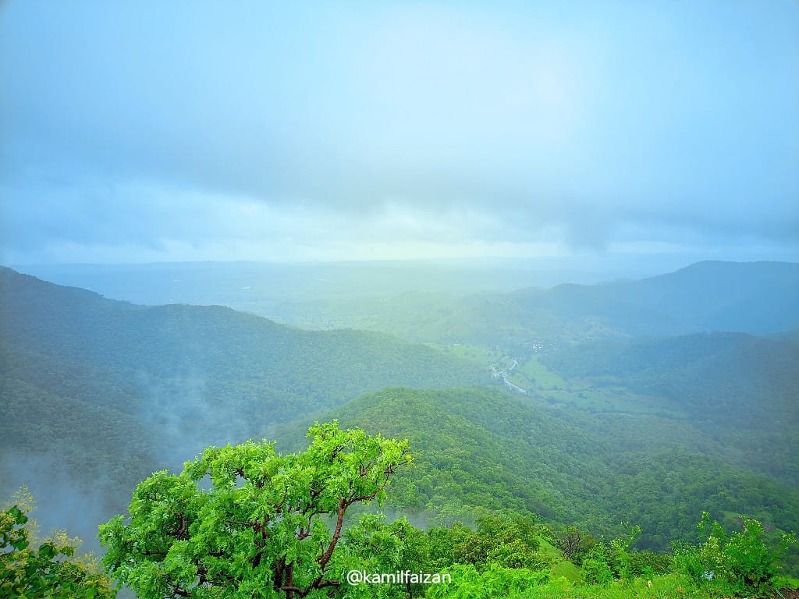

Discover Chikhaldara
Chikhaldara is a beautiful hill station in Maharashtra's Amravati district. Known for its lush greenery, scenic waterfalls, and fresh air, it offers a refreshing escape. Its name, derived from Marathi, means "mud stream" and it's reputedly linked to the Mahabharata. Although there's little evidence for this claim, it adds to the charm of Chikhaldara.
History
Discovered by Captain Robinson in 1823, Chikhaldara's lush green landscape reminded the Englishmen of England. The region was even proposed as the seat of the Government of India due to its resemblance to England's autumnal beauty. Explore more about the intriguing past that shaped this picturesque destination.
Attractions
Chikhaldara offers several attractions including:
- Melghat Tiger Reserve: A protected area known for its rich biodiversity and tiger sightings.
- Bhagwan Buddha Temple: A serene temple dedicated to Buddha, providing a tranquil environment.
- Gavali Lake: A picturesque lake ideal for boating and picnics.
- Sunset Point: A popular spot to witness breathtaking views of the sunset over the hills.
Climate
Chikhaldara enjoys a temperate climate throughout the year. The monsoon season (June to September) brings heavy rainfall, transforming the landscape into a lush green paradise. Winters (November to February) are cool and pleasant, making it an ideal time for visitors. Check out the best seasons to plan your visit and make the most of your trip.
Local Cuisine
The local cuisine of Chikhaldara is influenced by Maharashtrian flavors. Popular dishes include:
- Poha: A light, savory dish made from flattened rice, often enjoyed for breakfast.
- Pithla Bhakri: A traditional dish consisting of spicy gram flour curry served with jowar roti.
- Misal Pav: A spicy curry made with sprouted beans, served with bread rolls.
- Kachori: Fried pastries filled with spiced lentils or potatoes.
Recent Images

Culture and Festivals
Chikhaldara is rich in cultural heritage, with local festivals adding vibrancy to the region. Key festivals include:
- Ganesh Chaturthi: Celebrated with grand processions and decorations in honor of Lord Ganesha.
- Diwali: The festival of lights is celebrated with much enthusiasm, illuminating the town with festive lights.
- Navratri: A nine-night festival dedicated to the worship of the Hindu deity Durga, marked by dances and traditional music.
Activities and Adventure
For adventure enthusiasts, Chikhaldara offers a range of exciting activities:
- Trekking: Explore scenic trails like the Harisen Peak and the Narnala Fort trek, offering stunning views and challenging routes.
- Wildlife Safari: Experience a thrilling safari at the Melghat Tiger Reserve, spotting various wildlife species, including tigers, leopards, and various bird species.
- Boating: Enjoy a relaxing boat ride at Gavali Lake, surrounded by serene landscapes.
Accommodation
Chikhaldara offers a range of accommodation options for visitors:
- Hotel Lake View: A luxury hotel with stunning lake views and modern amenities.
- Forest Rest House: A budget-friendly option located near the forest area, ideal for nature lovers.
- Chikhaldara Resort: Offers comfortable stays with various recreational facilities, making it a perfect family getaway.
Travel Tips
Here are some tips for a smooth trip to Chikhaldara:
- Best Time to Visit: October to March, when the weather is pleasant and ideal for sightseeing.
- Transportation: Accessible by road from major cities like Amravati and Mumbai. Local taxis and buses are available for getting around.
- Essentials: Carry light woolens during winters and rain gear during the monsoon season. Don't forget to carry insect repellent and comfortable trekking shoes.